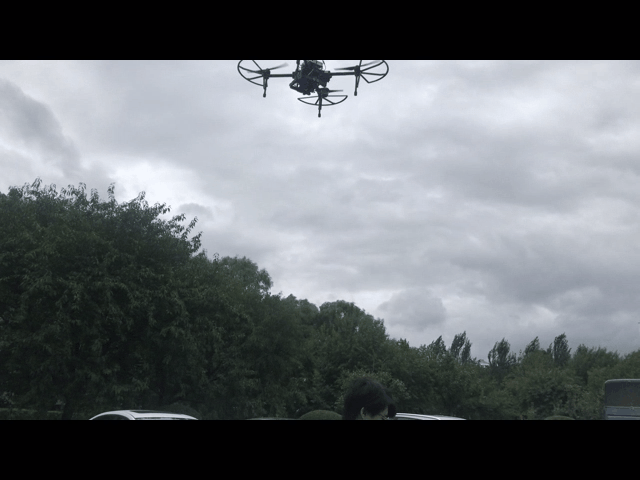
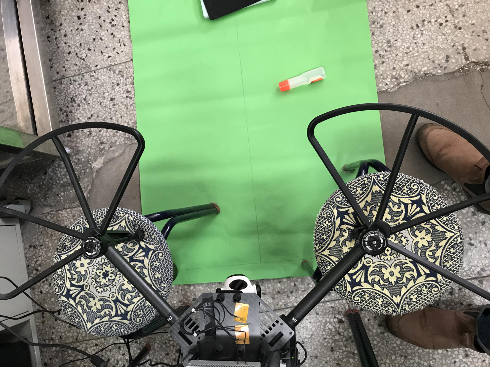
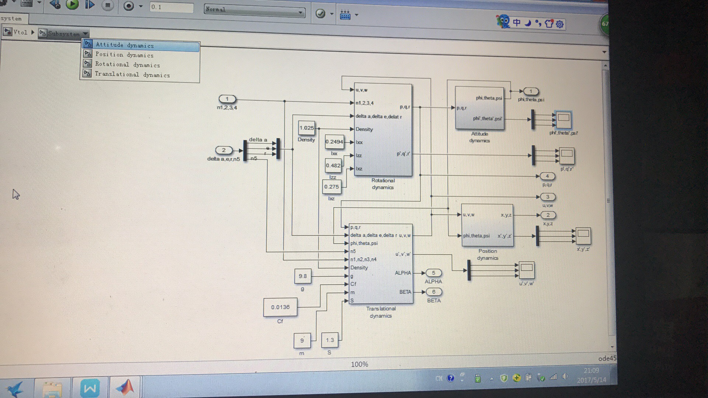
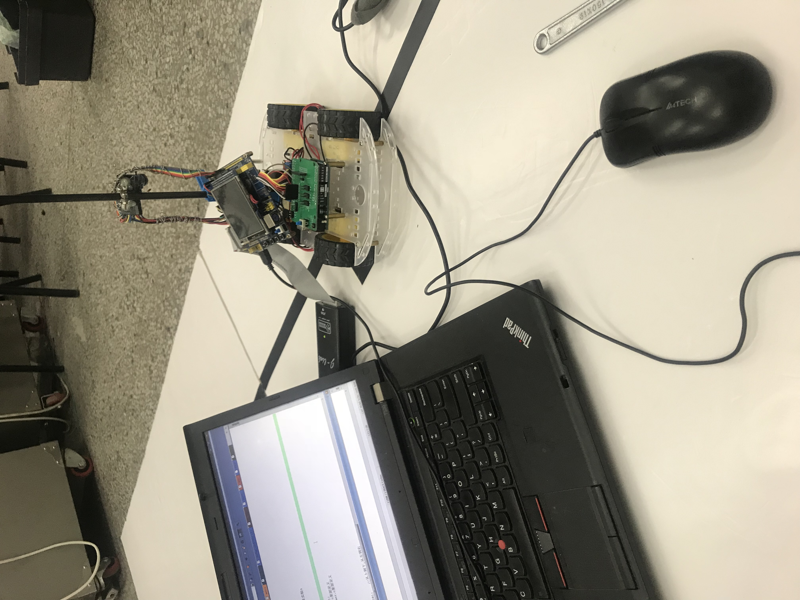

主要项目经历
2018/6–至今 无人机视觉跟踪控制系统
项目描述：研究生毕业设计。要求使无人机在空中飞行，通过视觉传感器对地面目标进行目标识别，并随着跟踪目标的不规则移动而始终与其保持一定的相对位置关系，最终实现对移动目标的平稳跟踪。
研究内容：实现了基于颜色特征和形状特征的目标检测；发明了一种基于颜色概率目标建议窗口的核相关滤波跟踪方法，解决了目标的尺度估计和部分遮挡问题；实现了三自由度云台跟踪，扩大了识别跟踪范围；完成了基于针孔模型和自身位置姿态关系的相对位置关系公式的推导；简单实现了跟踪控制器的设计应用，达到了一定的跟踪效果。 目前课题做到了中期阶段，接下来的目标任务是通过图传实现人机交互的跟踪目标选择界面以及继续优化视觉跟踪算法。

点此观看无人机跟踪视频
 点此观看云台跟踪视频
2016/12–2017/6 混合式VTOL无人机系统的建模与仿真
项目描述：本科毕业设计。要求设计的混合式VTOL无人机为固定翼与旋翼的结合，并具备两种工作模式，即垂直起降模式和平飞模式，并且可以在空中进行自由转换过渡；主要负责的是混合式VTOL无人机系统参数的确定、建模与仿真。
研究内容：实现了混合式VTOL无人机的数学建模；分别完成了坐标系的建立及变换以及动力学方程的建立；通过Matlab-Simulink平台进行了模型搭建；使用经典PID控制器对模型进行控制，得到能使系统输出比较稳定的结果曲线。

2017/10–2017/11 智能小车的路径识别、路况识别及几何标志识别
项目描述：课题组承接商业项目，要求开发一套智能小车的路径识别、路况识别及几何标志识别系统。保证智能小车在高速行驶中能够实时准确获取白色赛道中心并滤波；识别十字弯、直角弯等特殊类型赛道；识别单线赛道旁的几何标识。
研究内容：在STM32嵌入式平台上，编写实现了OV7670摄像头的实时图像获取、图像灰度化处理、图像二值化处理、中值滤波处理、连通域分析等操作；可通过连通域分析去除视频帧中黑色赛道的干扰并准确识别出一旁的几何标识。
